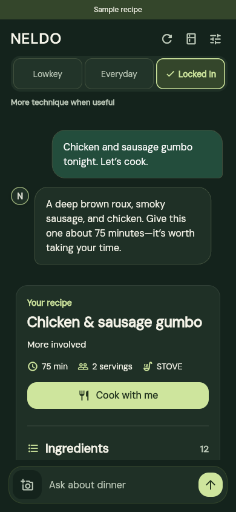
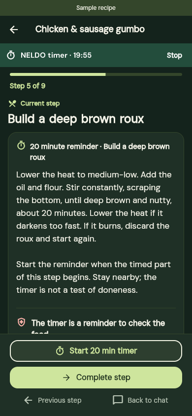
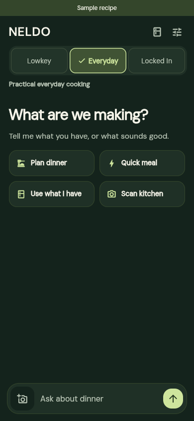

01 / Something with soul
Chicken & sausage gumbo
A dark roux, smoky sausage, and chicken. Some meals deserve a little time. Start with the dish you actually want.
Your next meal, made easier
Craving gumbo? Need something quick? Tell NELDO what sounds good, what’s in your kitchen, and how much energy you have. Find a meal that fits—and get help making it.
Free core help. No subscription. No required account.

Not just “what could I cook?”
“What actually fits right now?”
Your cravings, made practical
A favorite dish. A quick bowl. Something worth taking your time over. Start with what sounds good, then make a plan around your kitchen.
01 / Something with soul
A dark roux, smoky sausage, and chicken. Some meals deserve a little time. Start with the dish you actually want.
02 / Know what you need
Ingredients, amounts, and servings in one place. Check what you have before you start cooking.

03 / Bring it to the table
Keep the recipe close. Follow the steps and use a timer when the cooking needs your attention.

Recorded examples from NELDO, using sample recipes. Tap a screen to take a closer look. Always check ingredients and allergens.
Meet your Energy Modes
Energy isn’t a personality type. It’s what you have to work with right now. Pick a mode—or just start talking.
“I don’t have much in me.”
Keep meals manageable. Less prep, fewer steps, and less to clean up.
“Just a normal kind of day.”
A familiar, satisfying meal that fits the time and ingredients you have.
“I’ve got energy. Let’s cook.”
Take your time. Try a technique or a more involved dish—because you want to.
A pace for right now
A familiar meal at your usual pace. Enough room to cook, without making it a project.
See how each mode fits a different kind of day.

No mode is better than another. Your time, preferences, and constraints still matter.
Start with a conversation
Tell NELDO what you have, what sounds good, and how much you want to take on. No perfect plan required.
“I’m craving gumbo.Something you could ask NELDO
I’ve got time tonight.
Let’s make it good.”
A dish you’re craving. What’s in the fridge. Twenty minutes before you need to leave. Start wherever you are.
NELDO helps narrow the decision around your ingredients, time, and preferred effort. Not another endless recipe scroll.
Check what you need, follow the cooking steps, or save the recipe for later. The choice stays yours.
Plan the whole week
Plan a meal for every day, prep ahead on purpose, and shop once. Suggestions use your energy, food preferences, and allergy settings.
Pick saved favorites, ask for suggestions, or fill only the days that are still open. Change one day without losing the rest.
Turn on repeats and use the same recipe across days when you’re prepping ahead. NELDO won’t treat it as a mistake.
Ingredients from every planned day come together in one grocery list, split into what you need and what you already have.
Add goals for each meal, or for the day or week. Your allergies and foods to avoid stay part of every suggestion.
A look inside NELDO
From the first craving to the last cooking step. Take a closer look at your conversation, ingredients, and recipe.
01 / 04 — Start anywhere
Breakfast, lunch, dinner, or something in between. Start with a craving, a few ingredients, or whatever energy you have.
These recorded examples use sample recipes. Check ingredients and allergens before cooking.
Useful beyond the suggestion
Tell NELDO your ingredients. Keep what you have and what you need on a grocery list connected to your meal.
Save a meal, pick up ingredients, and reopen the same recipe when you’re ready to cook.
Name a dish or cuisine, from a Puerto Rican breakfast to gumbo or ramen. Be specific about what you want.
Saved meals stay on the device where you save them. Clearing app or browser storage removes them.
Allergies & dietary needs
NELDO can make mistakes and cannot guarantee that a meal meets your allergies or dietary needs.
Check every ingredient, product label, substitution, and possible allergen cross-contact before preparing or eating food. NELDO cannot verify how food is made or handled, and a recipe or dietary label does not certify that food is safe for you.
Add your allergies and ingredients to avoid in the app, and keep them up to date. These guide recipe suggestions; they do not replace your own checks. Review saved recipes again when your needs or ingredients change.
Dietary preferences are not medical advice. Follow your clinician’s guidance for food allergies and medically required diets. If you are unsure whether a food is safe for you, do not eat it until you have verified it.
Read FDA food-allergy guidanceA few things worth knowing
A meal you want to eat. A plan that fits your kitchen. Help with the cooking, one step at a time.
Core meal help is free, with no required account, subscription, or purchase. You can start without giving your name, email, or phone number.
NELDO supports English, Spanish, and Portuguese. Choose your language in the app’s settings. You can also change this website’s language above.
Grocery lists help you plan what to buy for your meals. Checkout and delivery are not available here.
Yes. Plan one meal for each day of the week, fill open days with suggestions, and turn on repeats if you’re meal prepping. Your week’s ingredients come together in one grocery list.
No. You can pick Lowkey, Everyday, or Locked In, or just describe what you need. A mode is a starting point—not a label for who you are.
Deciding what to eat, finding a recipe that fits, planning groceries, and cooking with step-by-step help. Save meals you like so your next dinner is easier.
NELDO helps with meal ideas and cooking based on the preferences you share. It does not replace a dietitian or clinician. Follow professional guidance for food allergies and medically required diets.
NELDO is not a therapist, clinician, or crisis service. If you need urgent support in the U.S. or its territories, call 988 or text 988. For immediate danger, call 911. Elsewhere, contact your local emergency or crisis service. More about 988.
Help shape what’s next
Good food, at your pace. NELDO is getting ready for iPhone and Android, starting with an adult U.S. beta. For now, explore how it works and get in touch about what’s next.
Ask about launch plansPublic access is not open yet. No signup or purchase is required to explore this website.